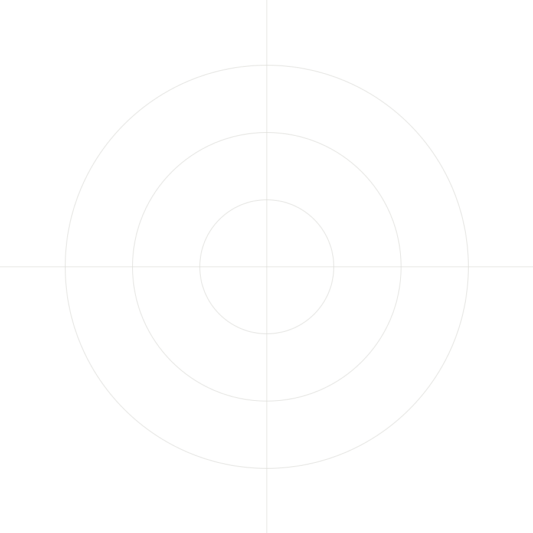

Are you safe from
an adversarial AI?
Attackers don’t open with something sophisticated. They walk the perimeter and test every door. They do it quietly, at scale, before you know they’re there. VEX runs that same sweep on you first.
Schedule testAttackers find open doors.
Before anyone tries anything sophisticated, they test every door. The unlocked one wins. In most businesses, it’s one of these:
Identity
Old logins
An ex-employee’s login that still works.
Open inboxes
Phishing walks straight into inboxes.
Domain
Copycat email
Anyone can send email that looks like it came from you.
Most breaches aren’t clever. They’re opportunistic, and the fix often takes ten minutes, once you know it’s there.
Human-augmented. 100% signal.
VEX handles discovery at machine speed. Our people handle the nuance, the manual validation, and the judgment calls a scanner can’t make.
Phase 01 · AI
HR 120
Machine discovery
Breadth, at machine speed.
HR 1
Connect
VEX connects to your Microsoft 365 or Google Workspace, a few lightweight agents go out, and the clock starts.
HR 2–20
Hunt
VEX sweeps every DNS record, application, and mail-routing rule, and flags anything unusual.
Phase 02 · Human
2124 Fix
Human judgment
Depth, where it counts.
HR 21–23
Review
Analysts with offensive security backgrounds review the findings and go deeper.
HR 24
Fix
You get a clear rundown of your exposure. Straightforward fixes are often closed live on the call.
We’ll fix it all.
Anything we can close live, we close, before you hang up.
If there is anything else, you’ll get a plain-English list of your exposure, ranked by what actually matters.
